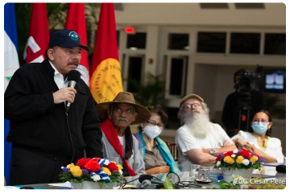

Daniel Ortega invento un "tío abuelo obispo" para atacar con virulencia a la iglesia
Su hermano Humberto Ortega lo desmiente: Marco Antonio Ortega no era un obispo "cómplice", sino el abuelo que abogó por su padre Daniel Ortega en 1934
Emergencia Coronavirus
Covid-19 en ascenso: Minsa admite más de 200 contagios en la ultima semana
Politica
Victoria Cárdenas y Berta Valle exigen ver a Juan Sebastián Chamorro y Félix Maradiaga
Régimen generaliza 90días de "investigación" para opositores que acusa de "traición a la patria"; ambos precandidatos continúan incomunicados
Politica
OEA condena con 26 votos el arresto de opositores y exige su liberación inmediata
El consejo Permanente aprueba resolución por amplia mayoria; únicamente cinco países miembros se abstuvieron y tres votaron en contra
Politica
La fórmula de Daniel Ortega para anular a la oposición de la competencia electoral
Fiscalía y Policía usan "Ley de Soberanía" para detener a opositores, y los encarcela por noventa días con el pretexto de "investigarlos"
Nación
Policía secuestra a opositores Dora M. Téllez, Ana M. Vijil, Suyen Barahona y Hugo Torres
Politica
"El respeto a los derechos humanos est´a por encima de cualquier principio de no injerencia"
Expresidente costarriciense Rafael Calderón destaca histórica resolución de cancilleres de la OEA que condenó a la dictadura de Somoza en junio de 1979
Politica
Régimen señala a miembros de la OEA de "cabildear" para interferir en los asuntos de Nicaragua
Politica
Régimen señala a miembros de la OEA de "cabildear" para interferir en los asuntos de Nicaragua